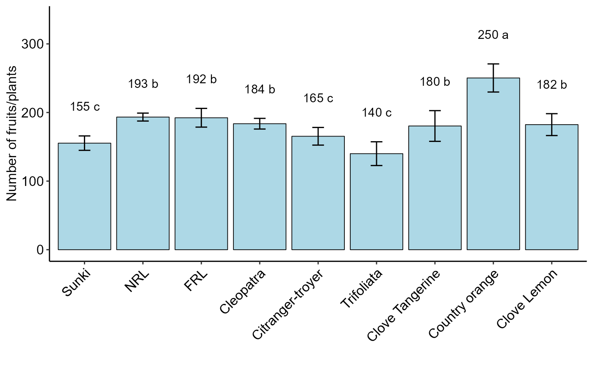

bar_graph.RdThis is a function of the bar graph for one factor
bar_graph(model, fill = "lightblue", horiz = TRUE)
| model | DIC, DBC or DQL object |
|---|---|
| fill | fill bars |
| horiz | Horizontal Column (default is TRUE) |
Returns a bar chart for one factor
radargraph, barplot_positive, plot_TH, plot_TH1, corgraph, spider_graph, line_plot, plot_cor, plot_interaction, plot_jitter, seg_graph, TBARPLOT.reverse
Gabriel Danilo Shimizu, shimizu@uel.br
Leandro Simoes Azeredo Goncalves
Rodrigo Yudi Palhaci Marubayashi
data("laranja") a=with(laranja, DBC(trat, bloco, resp, mcomp = "sk",angle=45, ylab = "Number of fruits/plants"))#> #> ----------------------------------------------------------------- #> Normality of errors #> ----------------------------------------------------------------- #> Method Statistic p.value #> Shapiro-Wilk normality test(W) 0.9475889 0.187264 #>#> As the calculated p-value is greater than the 5% significance level, hypothesis H0 is not rejected. Therefore, errors can be considered normal#> #> ----------------------------------------------------------------- #> Homogeneity of Variances #> ----------------------------------------------------------------- #> Method Statistic p.value #> Bartlett test(Bartlett's K-squared) 4.036888 0.85378 #>#> As the calculated p-value is greater than the 5% significance level, hypothesis H0 is not rejected. Therefore, the variances can be considered homogeneous#> #> ----------------------------------------------------------------- #> Independence from errors #> ----------------------------------------------------------------- #> Method Statistic p.value #> Durbin-Watson test(DW) 2.324604 0.2484349 #>#> As the calculated p-value is greater than the 5% significance level, hypothesis H0 is not rejected. Therefore, errors can be considered independent#> #> ----------------------------------------------------------------- #> Additional Information #> ----------------------------------------------------------------- #> #> CV (%) = 8.69 #> R-squared = 0.91 #> Mean = 182.5556 #> Median = 183 #> Possible outliers = No discrepant point #> #> ----------------------------------------------------------------- #> Analysis of Variance #> ----------------------------------------------------------------- #> Df Sum Sq Mean.Sq F value Pr(F) #> trat 8 22981.33333 2872.66667 11.41142069 2.636524e-05 #> bloco 2 33.55556 16.77778 0.06664828 9.357825e-01 #> Residuals 16 4027.77778 251.73611 #>#> As the calculated p-value, it is less than the 5% significance level. The hypothesis H0 of equality of means is rejected. Therefore, at least two treatments differ#> #> ----------------------------------------------------------------- #> Multiple Comparison Test #> ----------------------------------------------------------------- #> resp groups #> Country orange 250.3333 a #> NRL 193.3333 b #> FRL 192.3333 b #> Cleopatra 183.6667 b #> Clove Lemon 182.3333 b #> Clove Tangerine 180.3333 b #> Citranger-troyer 165.3333 c #> Sunki 155.3333 c #> Trifoliata 140.0000 c #>bar_graph(a,horiz = FALSE)